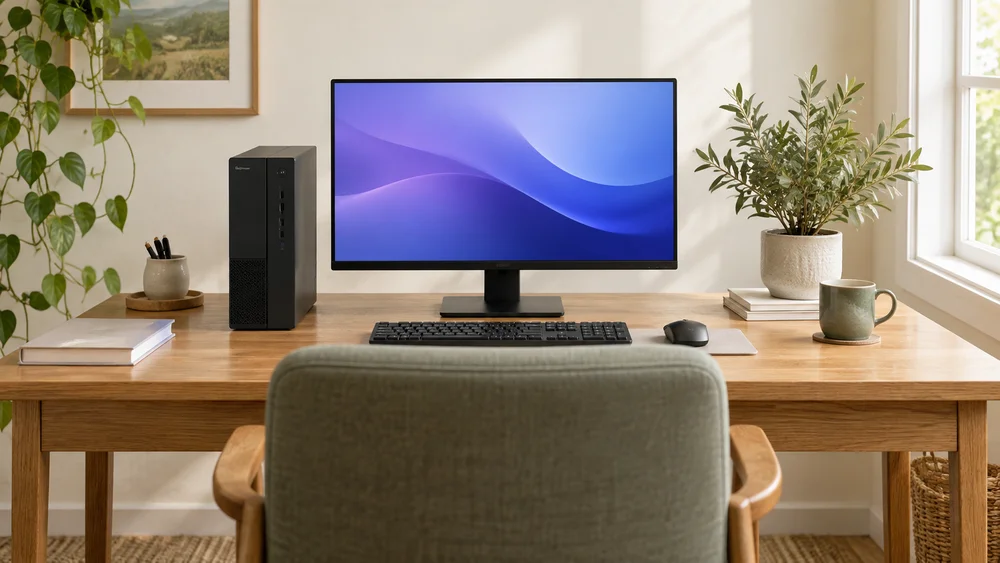

Beebo: a private home media server for Windows 10 and 11
Beebo is a personal home media server for Windows 10 and 11. It turns the movies, shows and home videos on your PC into a library you can watch on your phone, tablet, browser and TV.

At a glance: you supply the movie and show files, Beebo supplies the software. The app is free to use at home, your files stay on your own computer, and there is no catalogue of movies or shows included.
What Beebo is
Beebo is a private home media server. You point it at the folders on your PC that already hold your movies, shows and home videos, and it builds a library with posters and descriptions. Continue Watching remembers where each person left off, and everyone in the household signs in with their own account.
Beebo does not come with movies or shows. Use media you have permission to store and play.
What you need
- A Windows 10 or Windows 11 computer that stays on when you want to watch. It is the server.
- The folders where your movies and shows already live.
- A device to watch on: the Android app, or any web browser. To see it on a TV, cast to a Chromecast or Google TV. See all devices.
- For posters, cast and descriptions, a free TMDB key of your own. There is a step-by-step guide.
Download Beebo for Windows 0.1.102
| Version | 0.1.102, published Oct 24, 2026, 1:05 PM Eastern |
|---|---|
| File | Beebo.Entertainment.Setup.0.1.102.exeTest this version · checklist & feedback → Testing status & reviewer notes →, 258.3 MB (258,268,584 bytes) |
| SHA-256 | e1c87c60721bb50d12df14f04540452694c7c022ccfc69cd13aa42c4397a2906 |
| Needs | Windows 10 or 11 |
The installer is now digitally signed. Windows 0.1.102 is signed (Authenticode), and Windows should show the publisher as Nicholas Will instead of “Unknown publisher”. Because the publisher name is new, Windows SmartScreen may still show a short warning the first time people install it. The Windows setup guide explains what to do. To check your download, compare its SHA-256 with the value above (in PowerShell: Get-FileHash .\Beebo.Entertainment.Setup.0.1.102.exe).
New features are labelled Beta with the Windows version they arrived in. See what is new in each release and Home theater and big screen for what has and has not been tried on real equipment.
How it works
-
Install Beebo on your PC
Download the installer from the download details above or the Get Beebo section and run it. Beebo opens on its own when it finishes. Windows may show a security prompt for a newly downloaded installer; the Windows setup guide explains what to do.
-
Create your account and choose your folders
The first time Beebo opens, you choose a username and password and pick your movie and TV folders. Beebo builds your library and never moves or changes your files. The whole setup takes about ten minutes.
-
Watch at home
Install the Android app and sign in with your home’s name (or the owner’s email) and your own username and password, or open the address shown on the PC’s Get Started screen in any web browser. To watch on a TV, cast to a Chromecast or Google TV.
-
Watch away from home
Every Beebo gets a free address like yourname.beebo.tv. Open it on mobile data or any Wi-Fi, sign in, and your library is there. Your PC must be on and running Beebo.
Away from home, and what it costs
Beebo connects your phone straight to your home PC first. If that is not possible, Beebo can try automatic UPnP, or you can open ports on your router or bring your own relay. All of these are free, at any resolution. Beebo Relay, Beebo’s own relay, is an optional fallback if none of those work for you; it is in Beta and works today, but paid plans are Planned and not available to buy yet (see pricing). A relay passes the video along but can’t see it.
Beebo Entertainment is free to use at home. Away-from-home access is also free with a direct connection, automatic UPnP, or your own relay, at any resolution. Beebo Relay, Beebo's own relay servers, is an optional fallback for households where none of those work. It is in Beta and works today, but paid plans are Planned and not available to buy yet; see the pricing page. No payment card required to get started.
Not sure your internet allows it? Check that Beebo will work on your internet, or read Watch away from home.
Your files and your privacy
Your files stay on your own computer, and you decide who gets in: add people yourself or approve their requests, and remove access any time. Sign-in and connection set-up use a Beebo service that handles account and connection details. Read the privacy policy for what it sees.
Honest limits
- The PC has to be on. When it is off or asleep, nothing can stream from it.
- Windows is the main server. A Linux desktop beta and a Docker image for NAS boxes and servers are also betas, though neither is offered for download right now.
- No movies or shows are included. Beebo plays the files you already own.
- Live TV and DVR are Beta, with your own HDHomeRun tuner or your own M3U/IPTV playlist. They have not been tested with a real tuner or real playlists. Beebo supplies no channels. There is no plug-in ecosystem, only a small read-only API. See how Beebo compares, including where other apps are ahead.
- No finished TV or Apple apps yet. Fire TV, Roku and LG TV have in-development tester builds you install yourself, not tested on a real TV yet. iPhone, iPad, Apple TV, Samsung and Xbox have no install file yet. See the devices page for what works today and Home theater and big screen for the big-screen picture.
- Offline downloads need the Android app.
Current release and next steps
Updated Oct 24, 2026, 1:05 PM Eastern. Windows 0.1.102, published Oct 24, 2026, 1:05 PM Eastern; Android 1.51-tester34 (build 84), published Oct 21, 2026, 3:46 PM Eastern; Beebo Auto 1.20 (build 21), published Oct 21, 2026, 6:52 AM Eastern. Device runs on Oct 21 and 22 are recorded in the release evidence; most of these changes have still not been tried by a person.
Parental limits in Live TV and Movie Night · In development
In the Oct 21, 2026 release: a Live TV link stops when its profile is restricted, and a Movie Night room removes blocked titles when limits tighten. If a parental check itself fails, viewing continues; this is the owner’s choice.
What is left to reach 100%: Check restricted and normal profiles on a real PC after release, including changes during viewing.
Windows first-run connection test · In development
A first-run connection test card is in Windows 0.1.97 (Get Started shows a background connection test). It is not a promise that every router or away-from-home route will connect.
What is left to reach 100%: Check a real PC and different routers, including failed and unavailable connections.
Podcast import · In development
Podcast import from an OPML list file or a public feed link is in the downloads (Windows 0.1.88 and later; fixes in 0.1.97). Existing podcast playback keeps its earlier status.
What is left to reach 100%: Try real files, links and names, duplicates, failed imports and playback after release.
Remote Desktop keyboard helper · In development
Off by default. The keyboard helper change is in Windows 0.1.97; Remote Desktop has never been run on a real PC.
What is left to reach 100%: Use a real PC and phone to check keyboard, mouse, viewing, approval, disconnect and revoke.